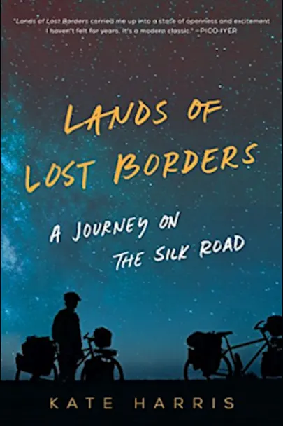

| 
|
As a teenager, Kate Harris realized that the career she craved—to be an explorer, equal parts swashbuckler and metaphysician—had gone extinct. From what she could tell of the world from small-town Ontario, the likes of Marco Polo and Magellan had mapped the whole earth; there was nothing left to be discovered. Looking beyond this planet, she decided to become a scientist and go to Mars.
In between studying at Oxford and MIT, Harris set off by bicycle down the fabled Silk Road with her childhood friend Mel. Pedaling mile upon mile in some of the remotest places on earth, she realized that an explorer, in any day and age, is the kind of person who refuses to live between the lines. Forget charting maps, naming peaks: what she yearned for was the feeling of soaring completely out of bounds. The farther she traveled, the closer she came to a world as wild as she felt within.
Lands of Lost Borders, winner of the 2018 Banff Adventure Travel Award and a 2018 Nautilus Award, is the chronicle of Harris’s odyssey and an exploration of the importance of breaking the boundaries we set ourselves; an examination of the stories borders tell, and the restrictions they place on nature and humanity; and a meditation on the existential need to explore—the essential longing to discover what in the universe we are doing here.
|